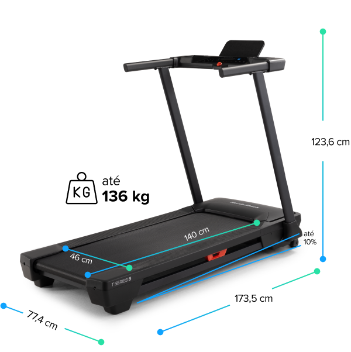
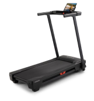

Sua academia particular
Você acabou de encontrar a esteira semiprofissional perfeita para a sua casa. Com a Nordictrack T5, você treina na intensidade que preferir e aproveita a integração com iFIT, a plataforma fitness líder nos Estados Unidos.

Treino
personalizado
dentro de casa
Você acabou de encontrar a esteira semiprofissional perfeita para a sua casa. Com a Nordictrack T5, você treina na intensidade que preferir e aproveita a integração com iFIT, a plataforma fitness líder nos Estados Unidos.
POWERED by
Junto com a Nordictrack T5, você leva 30 dias grátis de assinatura iFIT para aproveitar mais de 10 mil modelos de treinos profissionais e personalizados.

Conheça o iFIT, uma plataforma completa para quem busca treinos desafiadores de verdade.
POWERED by

Exercite-se em cenários incríveis, além disso tem ajustes automáticos de inclinação de acordo com o terreno.
Atividades personalizadas, seguindo seus objetivos, metas e necessidades.
Treinos criados por profissionais, medalhistas olímpicos e campeões mundiais.
Não importa se você está começando ou se já é profissional.

Sua esteira consegue acompanhar a velocidade, resistência e características do seu treino. Seja em uma corrida de rua ou aventura nas montanhas, seu equipamento ajusta automaticamente a intensidade de acordo com o terreno escolhido.
*Integração disponível apenas para intensidade na esteira Nordictrack T5. A inclinação precisa ser ajustada manualmente.

Usando o monitor de frequência cardíaca conectado via Bluetooth, a intensidade do seu treino é ajustada para permanecer dentro da sua zona de frequência cardíaca.

Não importa se você está correndo na sua trilha favorita ou exercitando em casa, cada treino é importante. Conecte sua conta iFIT com diversos apps para que todos os seus treinos estejam em um só lugar.
A lona da Nordictrack T5 é ampla e espaçosa e tem tecnologia de amortecimento KeyFlex™ para garantir a estabilidade nas suas passadas durante o treino.
As teclas Smart Quick servem para configurar tudo o que você precisa com poucos toques sem perder o pace!
O motor da esteira tem 2.6 CHP de potência real para manter a inclinação e velocidade constante por todo o tempo do treino.
Conheça as melhores opções de esteiras integradas com iFIT. Escolha o equipamento ideal e deixe seu treino mais desafiador e inteligente.

Esteira
Proform |

Esteira NordicTrack T5 |

Esteira NordicTrack T6.5S |
|
| Display | LED 5" | LCD 5" | LCD 5" |
| Suporte para tablet e smartphone |
|||
| Bluetooth | |||
| Alto-falante | |||
| Velocidade máxima | 16 km/h | 16 km/h | 16 km/h |
| Motor | 2.0 CHP | 2.6 CHP | 2.6 CHP |
| Amortecimento | Comfort Cell™ | KeyFlex | SelectFlex |
| Atalhos do painel | Velocidade | Velocidade e inclinação | Velocidade e inclinação |
| Inclinação automática* | |||
| Angulação de inclinação | 0 até 5,6% | 0 até 10% | 0 até 10% |
| Area de corrida | 40 x 120 cm | 46 x 140 cm | 50 x 140 cm |
| Peso máximo de usuário | 102 kg | 135 kg | 135 kg |
| Botão de emergência | |||
| Dobrável | |||
| Dimensão | 153 x 75 x 132 cm | 174 x 78 x 24 cm | 187 x 92 x 138 cm |
| Peso | 56 kg | 63 kg | 94 kg |
| Garantia | Estrutura e motor: 2 anos | Estrutura: 1 ano Partes eletrônicas: 1 ano Peças de desgaste de uso: 3 meses | Estrutura: 5 anos Motor: 3 anos |
| **É necessária a conexão com iFIT. | |||
| ***Estrutura: parte ferro, chassi das esteiras Partes eletrônicas: são placa eletrônica, painel, ambas partes importantes e que consumidores precisam saber Partes de desgaste de uso: lona de corrida | |||
Display: LCD
Inclinação: até 10%
Velocidade: até 16 km/h
Compatível com cinta para
Integração com iFIT: sim
monitoramento de batimentos cardíacos: sim
Alto-falantes embutidos: sim
Carga: até 136 kg
Motor: 2.6 CHP Drive System
Voltagem: bivolt
Lona: 46 cm de largura x 140 cm de comprimento
Peso do produto: 63 kg
Amortecedores: KeyFlex™
Garantia: estrutura: 1 ano
Dimensões do produto montado: 124 x 78 x 174 cm
Peças de reposição: 3 meses
Display: LCD
Velocidade: até 16 km/h
Integração com iFIT: sim
Alto-falantes embutidos: sim
Motor: 2.6 CHP Drive System
Lona: 46 cm de largura x 140 cm de comprimento
Amortecedores: KeyFlex™
Dimensões do produto montado: 123,6 x 77,4 x 173,5 cm
Dimensões do produto dobrado: 149,5 x 71 x 67 cm
Inclinação: até 10%
Compatível com cinta para monitoramento de batimentos cardíacos: sim
Carga: até 136 kg
Voltagem: bivolt
Peso do produto: 92 kg
Garantia: estrutura: 1 ano
Peças de reposição: 3 meses